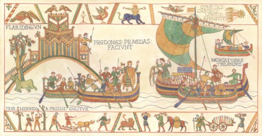
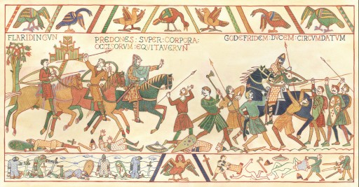
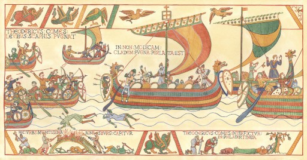
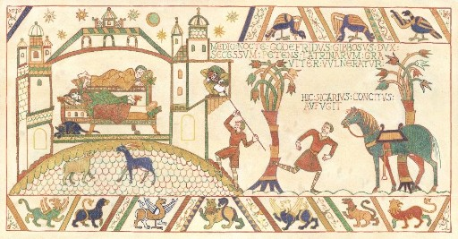
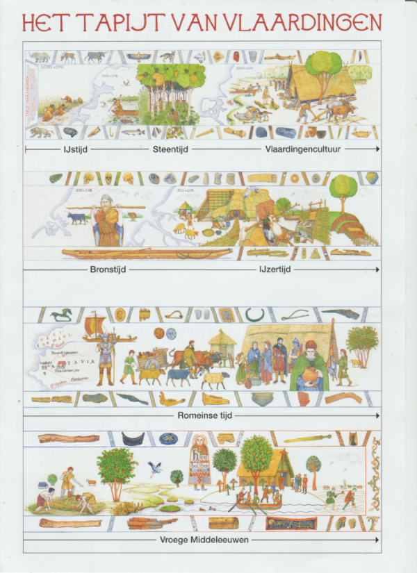

Tapijt van Vlaardingen
Welkom op de website van de Stichting
Tapijt van Vlaardingen. In 2018 was het 1000 jaar geleden dat de Slag bij Vlaardingen plaatsvond. Dat heeft geleid tot veel initiatieven. De archeologische vereniging Helinium kwam met het idee om het Tapijt van Vlaardingen te gaan borduren in de stijl van het Tapijt van Bayeux. Er waren reeds vier panelen aanwezig, gemaakt door illustrator John Rabou. Met deze vier panelen zijn we begonnen. Op deze website vindt u alle informatie van het project. Hebt u vragen? Laat het ons weten! Wilt u op de hoogte blijven van onze activiteiten? Schrijf u in voor onze Nieuwsbrief door het sturen van een mail.
De scènes over de Slag bij Vlaardingen in 1018 zijn vrijwel klaar. Hier volgen de beschrijvingen van de eerste vier afbeeldingen.
Rovers, Friezen en handelaren: een keizerlijk leger in het Merwedewoud
Op de eerste tekening zien we onderaan hoe 'het Merwedewoud door Friezen wordt ontgonnen'. Dit woud strekte zich uit langs de oevers van de toenmalige Merwede, zoals het riviertracé tussen Woudrichem en Vlaardingen genoemd werd. Het woud was eigendom van verschillende bisschoppen, maar de ontginners droegen de opbrengst af aan Dirk III, graaf van West-Friesland. Die had bij 'Flaridingun' een kleine versterking gebouwd (links). Van daaruit maakte de graaf en zijn manschappen, echte rovers (praedones) volgens de kroniekschrijver Alpertus, het de kooplieden uit Tiel lastig (rechts). Zij beklaagden zich bij Duitse keizer, de toenmalige heerser over het Nederlandse gebied en oom van Dirk III. Ook de bisschoppen die een gedeelte van het Merwedewoud in bezit hadden, vroegen de keizer om in te grijpen. Hij bracht een leger op de been onder leiding van hertog Godfried van Lotharingen. Het leger voer met schepen de rivier af en ging aan land bij Vlaardingen, waar veel Friese ontginners naartoe waren gevlucht. Een komeet met een lange staart (rechtsboven) die in die dagen aan de hemel verscheen, werd gezien als voorteken van groot onheil...
Strijd tussen de sloten: een handvol boeren verslaat een keizerlijk leger
De ridders van het keizerlijke leger konden uitstekend vechten vanaf hun paarden. Maar ze hadden weinig of geen paarden meegenomen in de schepen. Met hun zware maliënkolders en wapens konden ze te voet moeilijk opereren. Bovendien was het land bij Vlaardingen doorsneden door sloten en erg drassig. De opmars verliep dan ook niet voorspoedig. Toen het gerucht ontstond dat hun aanvoerder, hertog Godfried, was gesneuveld, brak er paniek uit in het leger. De troepen vluchtten terug naar de schepen. Op dat moment vielen de lichtbewapende Friezen aan. Een waar bloedbad volgde. Ten slotte vielen de soldaten van graaf Dirk aan. Vanuit de versterking reden zij met hun paarden over de lijken van de gesneuvelden heen (links). Hertog Godfried vluchtte niet samen met zijn manschappen en was omsingeld (rechts). Hij verweerde zich dapper, maar werd uiteindelijk gevangen genomen door Dirks soldaten. De gevangenschap van de hertog was van korte duur. Nadat hij beloofde ervoor te zorgen dat de nabestaanden van de gesneuvelden geen bloedwraak zouden nemen, werd hij vrijgelaten. Graaf Dirk III bleef heer en meester in het gebied.
De strijd gaat door: de burcht van Vlaardingen ingenomen
In september 1047 brandde er een nieuwe strijd los tussen de Duitse keizer en de West-Friese graaf. De keizer was nu Hendrik III (geen familie van Hendrik II) en de graaf in kwestie was Dirk IV, de zoon van Dirk III. De aanleiding voor deze oorlog is onduidelijk en de bronnen spreken elkaar tegen over de uitkomst van de gevechten. In ieder geval trok er weer een keizerlijk leger naar West-Friesland. Volgens één bron veroverde het leger de 'zeer sterke' burchten Vlaardingen en Rijnsburg (linksonder). Een andere bron meldt dat het leger de aftocht blies en dat graaf Dirk IV de achtervolging inzette met kleine schepen (links). Die vielen de achterhoede van de keizerlijke vloot aan en het leger 'leed een niet geringe nederlaag' (midden). Toch trok de keizer uiteindelijk aan het langste eind. In de winter van 1048-49 wordt graaf Dirk IV bij Vlaardingen vermoord (rechtsonder). De opdrachtgevers voor deze moordaanslag waren vermoedelijk de bisschoppen van de omringende bisdommen, de bondgenoten van keizer Hendrik III.
Schandelijke moord te Vlaardingen: het vernederende einde van een hertog
In 1070 verdreef hertog Godfried 'met de Bult' van Lotharingen - achterneef van de hertog Godfried die in 1018 bij Vlaardingen was verslagen – graaf Robrecht ‘de Fries’ uit het West-Friese graafschap. De verdreven graaf zon echter op wraak. Hij bereikte zijn doel enkele jaren later, in 1076. De hertog moest 's nachts naar het toilet. Dat was toen niet meer dan een deksel met een gat erin. Daaronder had zich een huurmoordenaar opgesteld, die de hertog met een wapen in zijn achterste stak. De hertog was zwaargewond en stierf zeven dagen later. Hij werd begraven in de Lotharingse hoofdstad Verdun. Deze moord vond plaats in Vlaardingen of Antwerpen. De bronnen spreken elkaar tegen. In ieder geval maakte Godfrieds dood de weg vrij voor de herovering van het West-Friese graafschap door graaf Robrecht De Fries en zijn stiefzoon, Dirk V. Zij en hun opvolgers bouwden verder aan het graafschap, dat vanaf 12e eeuw Holland heette. Daarvan zou Vlaardingen nog een eeuw lang één van de belangrijkste plaatsen zijn.
.png)
.png)
.png)
.png)